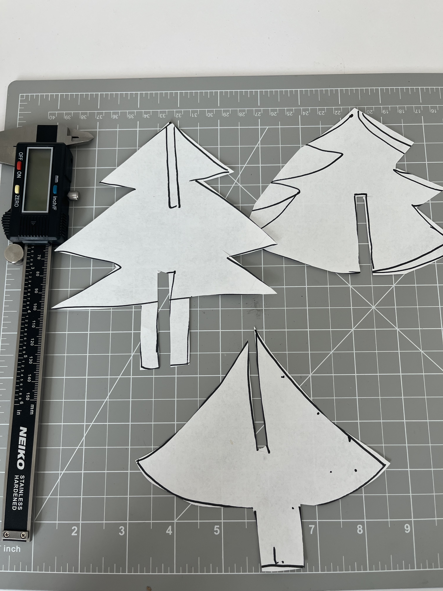
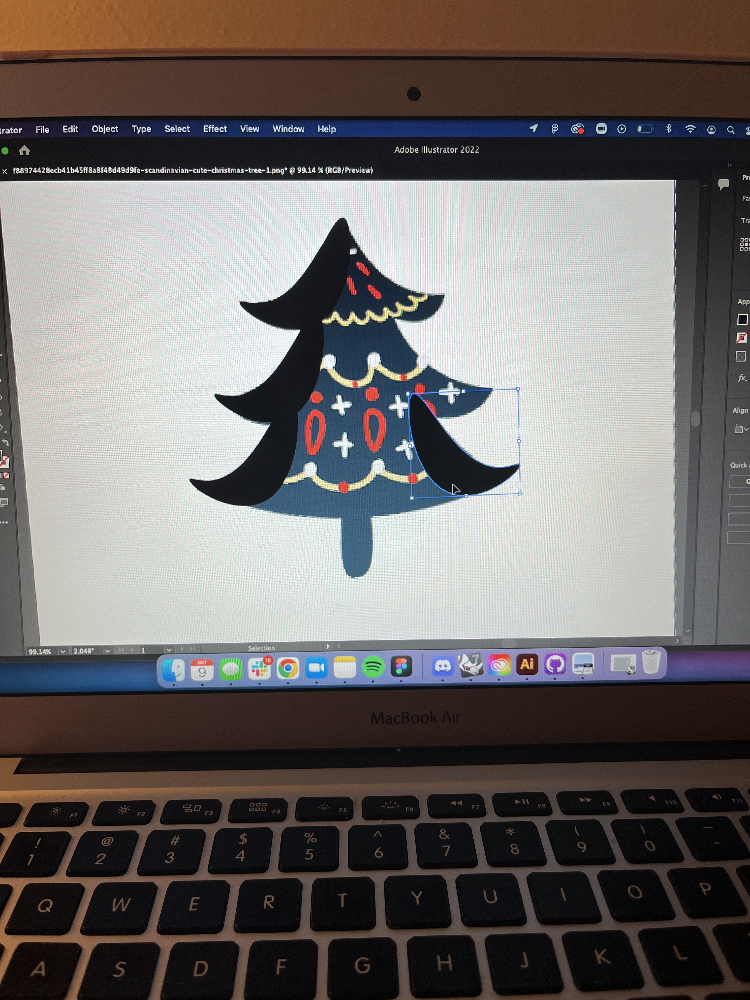
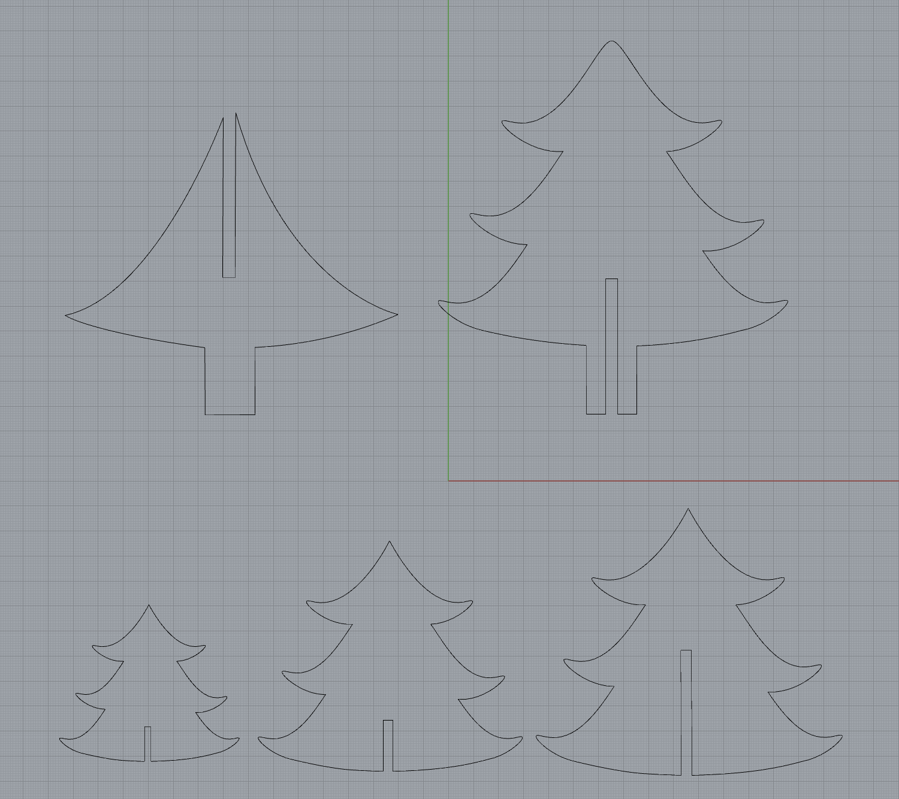
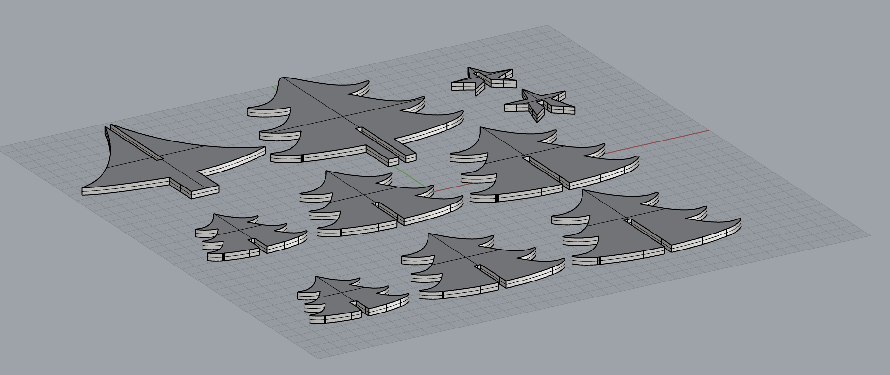
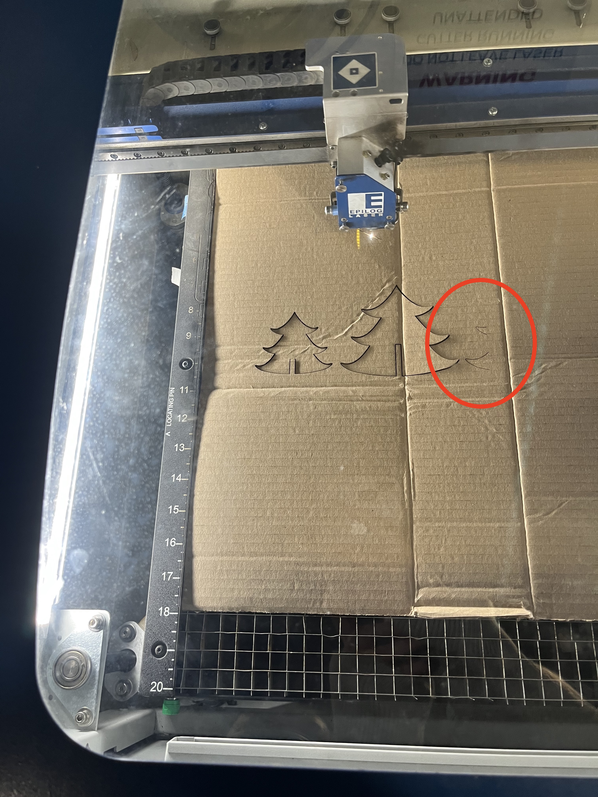
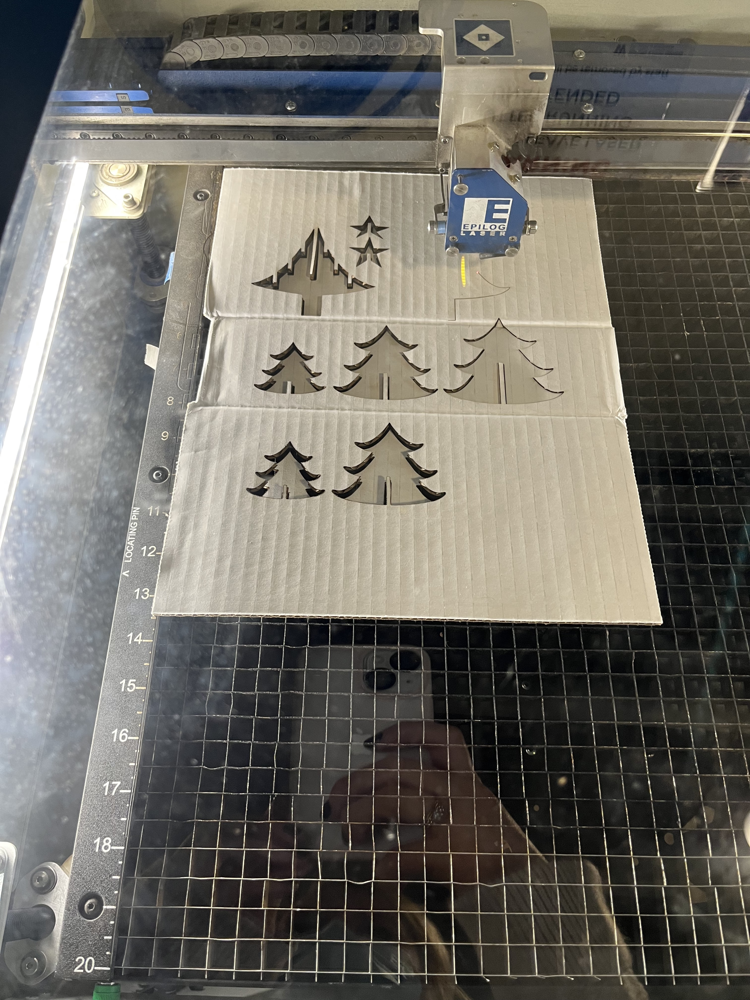
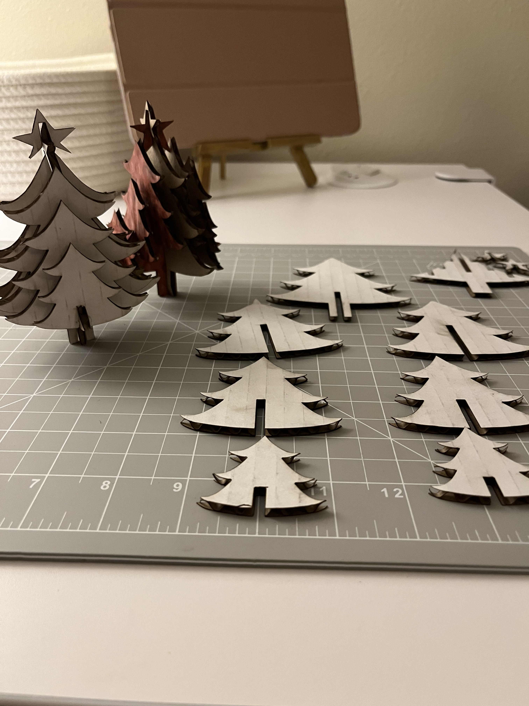
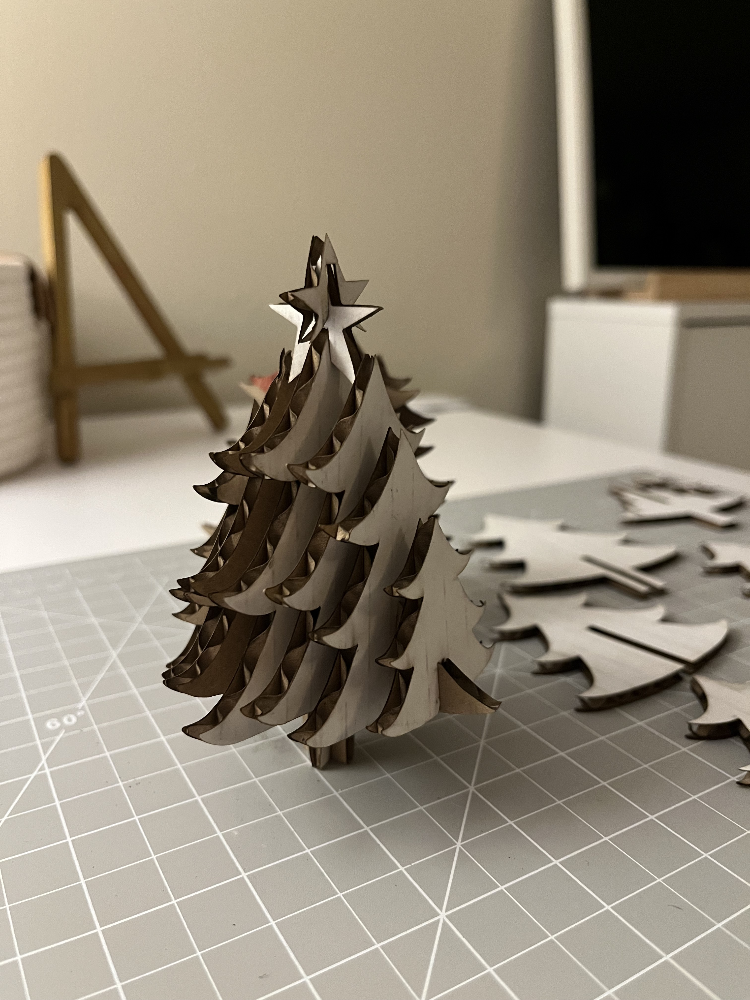

Beginning with a Sketch

I began my work by sketching the shapes on paper VERY roughly and looking at the dimensions of the cardboard I would use to understand how large the notches needed to be. To measure the cardboard I used Stainless steel digital calipers. After getting an extremely rough draft and measurments, I looked for an image that matched the whimsical style I wanted in the christmas tree and imported that into illustrator. In order to get a uniform shape because the tree would need to be able to balance on it's own, I drew one branch using the pen tool and copied it five times to make 6 uniform branches. I then filled in the middle with a triangualar shape, again using the pen tool and combined the shapes to make one vector image. I then exported that the vector image as a DXF file and opened it in Rhino. Source image used to sketch: https://www.alibaba.com/product-detail/Jigsaw-Christmas-Tree-3D-Wooden-Puzzle_60702582418.html


Checking the Dimensions in Rhino

I then exported that the vector image as a DXF file and opened it in Rhino. After modeling the shapes in rhino and checking that the measurements fit well together, I re-exported to Illustrator to print. I had difficulty at first understanding that I needed to export the images to Illustrator, but office hours with Junchao were a great help!

My designs were made on a 16x16 inch artboard and I ran into some difficulty with the print settings when I went to print it. I was unable (even with the help of staff) to print in an area that was 16x16 which resulted in a few misprints. I had to scale my designs down to an 8.5 x 11 artboard and make adjustments to the notches to ensure that the cardboard would fit snug as designed.

I finally got it to work correctly and used the setting suggested: Speed 25% and Power 100%

In the end, the final product came out fitting together perfectly and very securely!


Source Files: https://github.com/Mary-Gower/HCDE/blob/master/Assignment-1_Final.3dm
https://github.com/Mary-Gower/HCDE/blob/master/Assignment-1_Final-AI.AI
Shout Outs: Junchao was very helpful during office hours, Nichelle and the staff at the Mill helped me to understand the mechanics of the Laser cutter, and many people answered questions in the group chat on discord, namely: Alexa, Sara Cagle, and Jessica Douma.